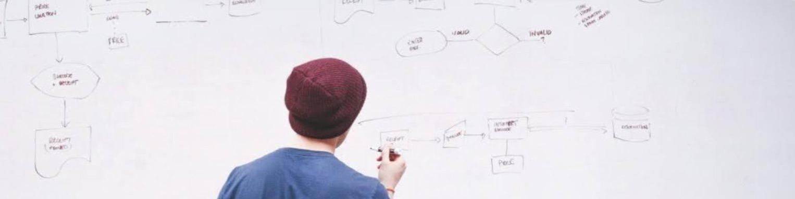

PLOGIN - 應用

準備專案報告
PLOGIN的架構圖表能讓人有更多心力思考由自己所產出的想法，而加入更多有價值的觀點在專案報告上。

閱讀學術文章
PLOGIN可以用架構圖來有效輔助閱讀時的邏輯梳理，避免讓人趟容易陷入閱讀疲乏。

創作個人筆記
PLOGIN能提供架構圖讓人在學習的同時間寫下自己的想法，做出符合自己邏輯語意的筆記。

製作心智圖表
PLOGIN能讓人用心智圖紀錄想法，以最直覺性的樹枝狀架構作圖來呈現，並整理成對自己有意義的邏輯架構知識內容。

整理長文架構
PLOGIN提供有意義的架構分析，並用不同色塊分類詞性、用箭頭表示順序，能讓人快速理解文章大致架構。